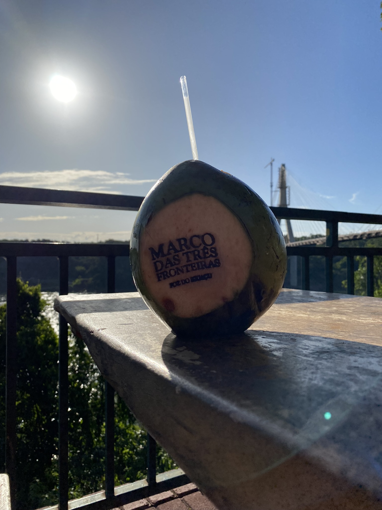
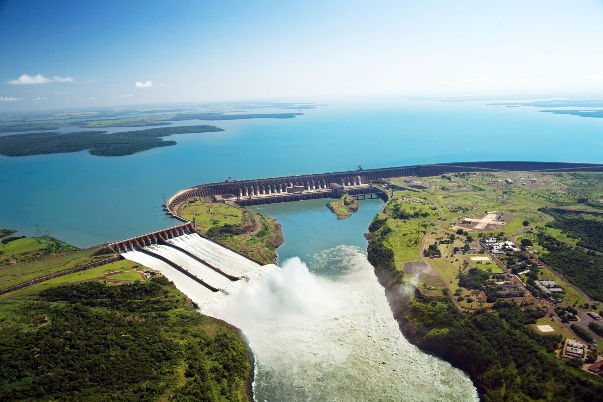
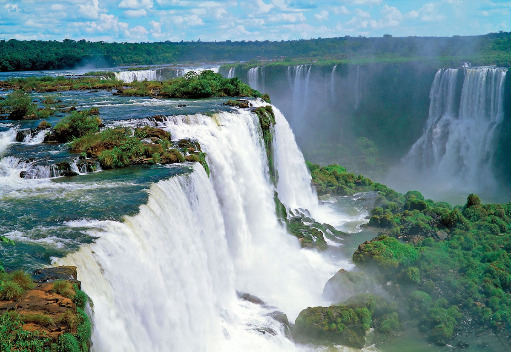

A viagem
Cruzamos Santa Catarina e Paraná em uma excursão escolar, destino à Foz do Iguaçu... Conhecemos a usina hidrelétrica de Itaipú, o parque das aves, as cataratas do Iguaçu e também o templo budista.
Galeria de fotos
Tríplice Fronteira
 Tríplice Fronteira é uma região de fronteira entre Argentina, Brasil e Paraguai. É a principal fronteira da América do Sul em termos de população, circulação de pessoas e relações internacionais. É considerada uma região internacional compreendida em suas dimensões locais e globais.
Usina Hidrelétrica de Itaipú
 A Barragem de Itaipu é uma enorme barragem hidroelétrica no rio Paraná, entre o Brasil e o Paraguai. É conhecida pelos espetáculos de luzes noturnos e as vistas do miradouro central. O centro de comando do edifício de produção controla as turbinas da barragem.
Cataratas do Iguaçu
 Cataratas do Iguaçu é um conjunto de cerca de 275 quedas de água no rio Iguaçu (na Bacia hidrográfica do rio Paraná), localizada entre o Parque Nacional do Iguaçu, Paraná, no Brasil, e o Parque Nacional Iguazú em Misiones, na Argentina, na fronteira entre os dois países. A área total de ambos os parques nacionais corresponde a 250 mil hectares de floresta subtropical e é considerada Patrimônio Natural da Humanidade.
Parque das Aves
 Parque das Aves
é um parque temático localizado no município brasileiro de Foz do Iguaçu, no estado do Paraná.
Situado próximo às Cataratas do rio Iguaçu, possui 16 hectares de mata nativa, com 1 500 animais
de 140 espécies diferentes, entre aves, répteis e mamíferos
Parque das Aves
é um parque temático localizado no município brasileiro de Foz do Iguaçu, no estado do Paraná.
Situado próximo às Cataratas do rio Iguaçu, possui 16 hectares de mata nativa, com 1 500 animais
de 140 espécies diferentes, entre aves, répteis e mamíferos
Depoimentos
- Juliana:
-
Conhecer as cataratas foi uma experiência única.. o lugar que mais gostei de ir foi no bar de gelo e no museu de cera dreamland. com certeza iria mais vezes!